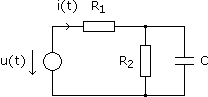
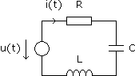

Laplacetransformation - Aufgaben 1
1.
Bestimme i(t), wenn a) u(t) = 45 V, b) u(t) = 45t V, c) u(t) = 15sin300t V und iL(0) = 0.

R2 = 250 Ω
R3 = 150 Ω
L = 1 H
R3 = 150 Ω
L = 1 H
2.
Bestimme i(t), wenn u(t) = 98sin250t V und uC(0) = 0.

R1 = 560 Ω
R2 = 1,4 kΩ
C = 20 μF
R2 = 1,4 kΩ
C = 20 μF
3.
Bestimme i(t), wenn u(t) = 12sin125t V und uC(0) = iL(0) = 0.

R = 180 Ω
C = 50 μF
L = 400 mH
C = 50 μF
L = 400 mH
4.
Bestimme i(t), wenn u(t) = 61sin150t V und uC(0) = iL(0) = 0.

R1 = 480 Ω
R2 = 200 Ω
C = 25 μF
L = 2 H
R2 = 200 Ω
C = 25 μF
L = 2 H
Ergebnisse:
1. a) i(t) = 0,48 – 0,30e–150t A b) i(t) = 0,48t – 0,002 + 0,002e–150t A
c) i(t) = –0,04cos300t + 0,08sin300t + 0,04e–150t A
2. i(t) = 0,05cos250t + 0,15sin250t – 0,05e–125t A
3. i(t) = 0,03cos125t + 0,05sin125t – 0,27e–200t + 0,24e–250t A
4. i(t) = –0,03cos150t + 0,09sin150t + 0,03e–220tcos140t – 0,05e–220tsin140t A